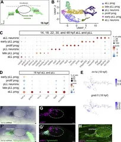

The Journal of cell biology ·
The Cxcl14 chemokine defines pioneer axon guidance and early circuit assembly in the inner ear.
- Review: Journal (provisional: Provisional wording: «published in a journal» does not prove peer review. Sofía decides what this signal is called.)
- Subjects: Animals
- Notices: No notices
